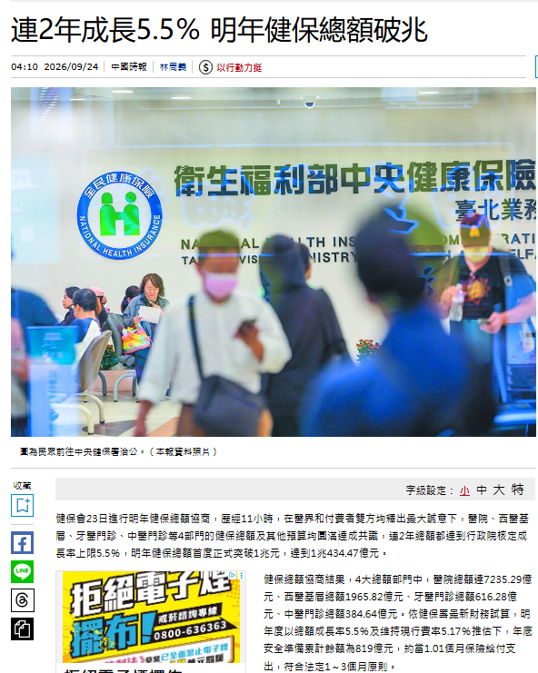
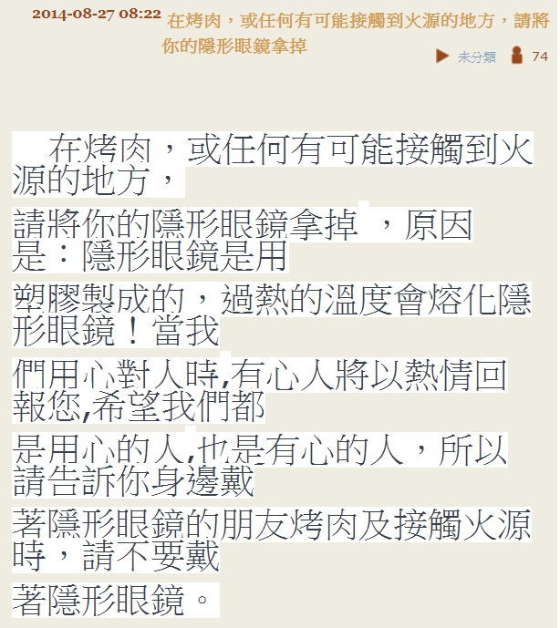
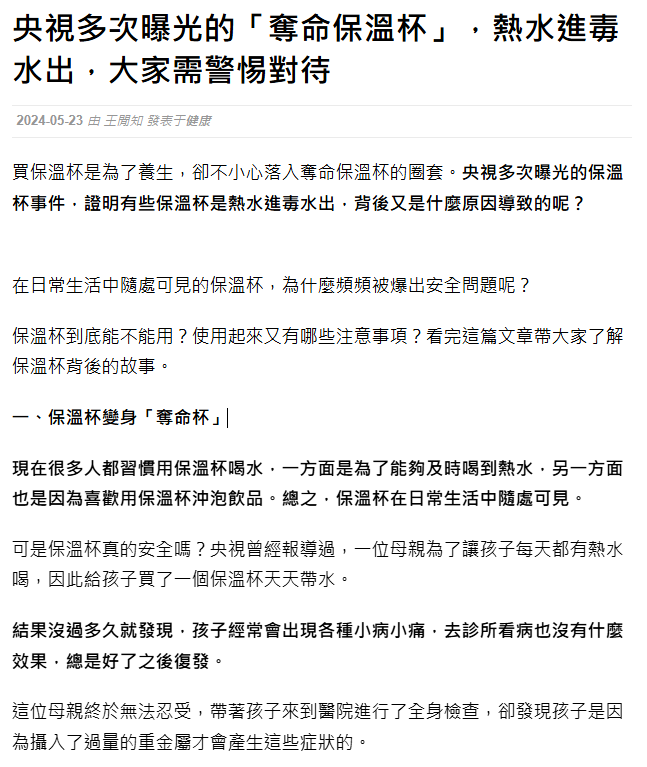

五年級上學期 · L03 來源評估與橫向閱讀 · 教學活動流程
🔗 已連線：老師公布①解析時，這台會自動同步
先不看內容，單憑這兩份「長相」，你覺得哪一份比較可信？


🔒 解析等老師公布後才會出現
文章就像人一樣，要有「身分證」。路人如果沒有身分證、不敢說自己住哪，你會覺得可疑；文章如果沒有標題、作者、日期、來源，就是「身分不明」。點下面五張卡，翻開看看 5W 各自在問什麼。
👉 重點不是每個都要有，而是「缺越多，警訊越高」；Why（動機）最容易被忽略——它問的是「對方為什麼要讓我知道這件事？」
看看這篇文章，最下面清楚寫著發表日期和作者名字。

之後幫網站評分時，可以參考這個標準：
你在家滑手機，突然跳出一則通知——點下面的通知看看寫什麼。
🤔 看到這則訊息，你可以怎麼做？
面對媽媽傳來的這則訊息，我們可以：
🔮 如果這是真的官方規定，你猜「理所當然」還會有哪個單位公布完整辦法？
下面三個網站，每個都做三步：①勾選有沒有作者／日期／來源 ②幫它評可信度 ③針對「來源」離開頁面搜尋查證，寫下你查到什麼。任選 2 個完整做完即可，進度快的可以挑戰第 3 個。
先點左邊一個 W，再點右邊對應的問題，配對正確會變綠色。
配對完成：0 / 5
確定都填好了嗎（至少完成④的 2 個網站）？按下面按鈕交給老師。